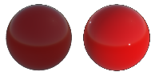
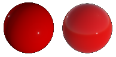
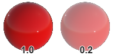
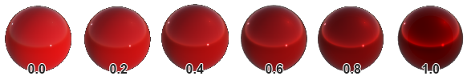
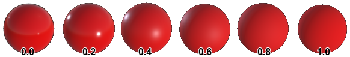
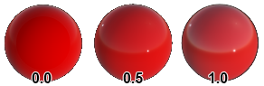

Built-in Effects
The Evergine.Core package, which every project references, includes the effects the engine and its components need. You use most of them indirectly: the Standard effect through the default material, the particle effect through particle systems, the text effect through Text3D. This page describes what each one is for and the parameters you can set on its materials.
| Effect | Used by |
|---|---|
| Standard | The default material and most imported materials. |
| SSS | Skin and other translucent materials, with the SSS post-processing effect. |
| Distortion | Heat haze, glass and other refractive surfaces. |
| Skybox | Skies from an equirectangular HDR image. |
| Atmospheric | The procedural sky of the sky atmosphere. |
| Billboard | Billboards. |
| Particles | Particle systems. |
| SDFText | 3D text. |
| Line | Line meshes. |
| LineBatch, RenderQuad, BackgroundImage | Internal: the line batch, the copy of each camera's image to its target, and texture previews in Evergine Studio. |
Standard Effect
The Standard effect is a physically based metallic-roughness shader. It is what the DefaultMaterial of Evergine.Core uses, and the defaults below are that material's values.
| Property | Default | Description |
|---|---|---|
| Lighting enabled | On | Whether the material is lit by the scene's lights. Unlit materials show their base color as is.  |
| IBL enabled | On | Whether the material reflects the environment.  |
| Base Color | White | Color of the surface. |
| Alpha | 1 | Opacity. It only has an effect with a render layer that blends, such as Alpha.  |
| Vertex Color | Off | Multiply the base color by the vertex colors of the mesh. |
| Base Color Texture | none | Albedo texture. |
| Base Color Sampler | none | Sampler for the albedo texture. |
| UVOffset0 | (0, 0) | Offset added to the texture coordinates. Animate it to scroll a texture. |
| Texture Tiling | (1, 1) | Scale of the texture coordinates: (2, 2) repeats textures twice in each direction. Use a wrapping sampler to tile. |
| Texture Rotation | 0 | Rotation of the texture coordinates, in degrees in Evergine Studio and radians in code. |
| Metallic | 0 | From 0 (dielectric: plastic, wood, stone) to 1 (metal). Real materials are almost always one or the other.  |
| Roughness | 0 | From 0 (mirror-smooth) to 1 (fully rough).  |
| Reflectance | 0.5 | Reflectance of dielectrics at normal incidence, in place of an index of refraction. 0.5 (4%) suits most materials.  |
| Alpha Cutout | 0 | Pixels with alpha below this value are discarded. Any value above 0 enables alpha testing, for foliage and fences. Reference Alpha edits the same value without switching alpha testing on. |
| AllowInstancing | Off | Let meshes that share this material be drawn with instancing. |
| OrderBias | 0 | Moves the material earlier or later within its render layer. |
| LayerDescription | Opaque | The render layer the material is drawn in. |
Metallic and roughness map
| Property | Description |
|---|---|
| MetalRoughness Texture | Metallic in the blue channel and roughness in the green channel, per pixel, instead of the constant values above. |
| MetalRoughness Sampler | Sampler for the texture. |
Normal map
| Property | Description |
|---|---|
| Normal Texture | Tangent-space normal map, which adds surface detail without more polygons. |
| Normal Sampler | Sampler for the texture. |
Ambient occlusion map
| Property | Description |
|---|---|
| Occlusion Texture | How much ambient light reaches each point, in the red channel, from 0 (none) to 1 (all). |
| Occlusion Sampler | Sampler for the texture. |
Emissive
| Property | Description |
|---|---|
| Emissive Color | Color of the light the surface emits, for screens, neon and lamps. It is added on top of the lit color. |
| Emissive Compensation | Exposure compensation of the emission, in EV. Positive values make the surface brighter than the camera exposure would; negative values darker. With bloom, bright emission glows. |
| Emissive Texture | Per-pixel emission color. |
| Emissive Sampler | Sampler for the texture. |
Clear coat
A clear coat is a thin, transparent varnish over the base layer, as on car paint or lacquered wood.
| Property | Description |
|---|---|
| ClearCoat | Strength of the clear coat, from 0 to 1. |
| ClearCoat Roughness | Roughness of the clear coat, from 0 to 1. |
| ClearCoat Normal Texture | Normal map for the clear coat, independent of the base layer's. |
| ClearCoat Normal Sampler | Sampler for the texture. |
SSS Effect
A variant of the Standard effect for materials where light scatters under the surface, such as skin, wax or marble. It has the same base parameters plus:
| Parameter | Default | Description |
|---|---|---|
| SSSScatter | 0.03 | How far light scatters under the surface. Requires the SSSScatter directive. |
| SSSIntensity | 0.1 | Strength of the scattering. |
| SSSTranslucency | (0.64, 0.094, 0.063) | Color of light passing through thin parts. Requires the SSSTranslucency directive. |
| SSSBias | 0.005 | Depth bias used to estimate thickness for translucency. |
| SSSScatterTexture, SSSTranslucencyTexture | none | Per-pixel versions of the two effects. |
The scattering itself is computed by the Subsurface Scattering post-processing effect, which must be enabled.
Distortion Effect
Offsets the image behind the surface, for heat haze, glass or water. The material writes the offset into the GBuffer, and the Distortion option of the tone mapping node applies it, so that option must be enabled. Evergine.Core includes a ready material, DistortionMat.
| Parameter | Default | Description |
|---|---|---|
| Intensity | 1 | Strength of the distortion. |
| Distortion Texture | none | Texture that encodes how far each point offsets the image behind it. |
| Sampler | none | Sampler for the texture. |
| LayerDescription | The render layer of the material. |
Skybox Effect
Draws an equirectangular (360°) texture as the sky, usually on a large sphere in the Skybox render layer. Environment Textures shows how to use it for image-based lighting.
| Parameter | Default | Description |
|---|---|---|
| Texture | none | The equirectangular texture, ideally HDR. |
| Intensity | 1 | Brightness multiplier of the sky. |
Atmospheric Effect
Renders the physically based sky of the sky atmosphere, with the sun disk.
| Parameter | Default | Description |
|---|---|---|
| SunDisk | directive | Draw the sun disk. |
| SunSize | 0.02 | Angular size of the sun disk. |
| SunSizeConvergence | 500 | Sharpness of the sun disk's edge. |
Billboard Effect
Draws billboards: textured quads that face the camera. Its only resource is the billboard texture.
Particles Effect
Draws particle systems. Its directives are set by the particle system from its properties: a texture (Diffuse), rotation (Angle), local or world space (Space), GPU simulation (SBuffer) and highlight preservation for additive particles (PreserveHighlights).
SDFText Effect
Draws text from a signed distance field font atlas, which stays sharp at any size. Text3D uses it.
| Parameter | Default | Description |
|---|---|---|
| ForegroundColor | White | Text color. |
| Thickness | 0.7 | Distance threshold of the glyph edge, which sets the weight of the text. |
| PxRange | 1 | Distance range of the atlas, in pixels. |
| TextureSize | (256, 256) | Size of the atlas texture. |
Line Effect
Draws line meshes.
| Parameter | Default | Description |
|---|---|---|
| DiffuseTexture | none | Texture along the line, with the Diffuse directive. |
| TextureOffset | (0, 0) | Offset of the texture coordinates. |
| TextureTiling | (1, 1) | Tiling of the texture coordinates. |
| Align | directive | Orient the line towards the camera. |